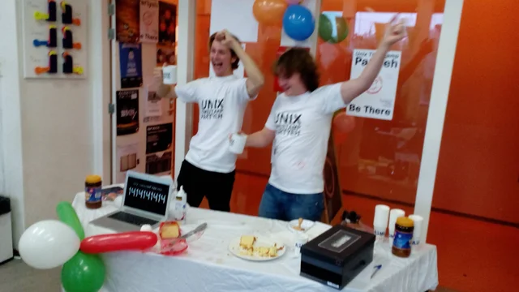

Unix Tutorial Challenge
Contents
Unix Tutorial Challenge¶

Here is a short assignment to check your Unix skills. Try to complete this by the end of class on the day we work on the Unix Tutorial. If you need extra help, come ready the following day with questions.
Complete the following tasks:
Open up a Terminal (Mac) or Anaconda Powershell Prompt (Windows).
Via Terminal/Powershell, change directories to your eoda thumb drive (you will have needed to re-name your thumb drive to
eodafirst).Make a new directory from the unix command line using
mkdircalledassignments.
Bonus Point if done via command line
Download the markup file (.md) for the First Assignment, and using Terminal/Powershell move it from wherever it was downloaded to your computer (usually your
Downloadsfolder by default:/Users/<your username>/Downloads(Mac) orC:\Users\<your username>\Downloads (Windows)to your new assignments folder on yoru eoda thumb drive.
Hint: your eoda thumb drive will mount to these locations by default: Mac -
/Volumes/eodaor Windows -D:\(or could be given another letter)
Last Step:¶
From within your Terminal/Powershell, from within yoru new
eoda/assignmentsfolder, execute the following commands and take a screen shot of your terminal with the output. Upload this to Canvas!
$ pwd
$ ls